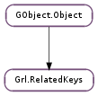

| static | new() |
| dup() | |
| get(key) | |
| get_binary(key) | |
| get_boolean(key) | |
| get_boxed(key) | |
| get_float(key) | |
| get_int(key) | |
| get_keys() | |
| get_string(key) | |
| has_key(key) | |
| remove(key) | |
| set(key, value) | |
| set_binary(key, buf, size) | |
| set_boolean(key, booleanvalue) | |
| set_boxed(key, boxed) | |
| set_float(key, floatvalue) | |
| set_int(key, intvalue) | |
| set_string(key, strvalue) |
None
None
| Name | Type | Access |
|---|---|---|
| parent | GObject.Object | r |
Bases: GObject.Object
| Returns: | a new object. |
|---|---|
| Return type: | Grl.RelatedKeys |
Creates a new Grl.RelatedKeys instance that can be used to store related keys and their values.
| Returns: | a new Grl.RelatedKeys. Free it with GObject.Object.unref. |
|---|---|
| Return type: | Grl.RelatedKeys |
Makes a deep copy of relkeys and its contents.
| Parameters: | key (int) – key to look up. |
|---|---|
| Returns: | a GObject.Value. This value should not be modified nor freed by user. |
| Return type: | GObject.Value |
Get the value associated with key from relkeys. If it does not contain any value, None will be returned.
| Parameters: | key (int) – key to use |
|---|---|
| Returns: | buffer location associated with key, or None in other case. If successful size will be set to the buffer size. |
| Return type: | int, size: int |
Returns the value associated with key from relkeys. If key has no value, or value is not a binary, or key is not in relkeys, then 0 is returned.
| Parameters: | key (int) – key to use |
|---|---|
| Returns: | float value associated with key, or False in other case. |
| Return type: | bool |
Returns the value associated with key from relkeys. If key has no value, or value is not a bool, or key is not in relkeys, then False is returned.
| Parameters: | key (int) – key to use |
|---|---|
| Returns: | the GObject.GBoxed value associated with key if possible, or None in other case. The caller should not change nor free the value. |
| Return type: | int |
Returns the value associated with key from relkeys. If key has no value, the value is not of a boxed type, or key is not in relkeys, then None is returned.
| Parameters: | key (int) – key to use |
|---|---|
| Returns: | float value associated with key, or 0 in other case. |
| Return type: | float |
Returns the value associated with key from relkeys. If key has no value, or value is not a float, or key is not in relkeys, then 0 is returned.
| Parameters: | key (int) – key to use |
|---|---|
| Returns: | int value associated with key, or 0 in other case. |
| Return type: | int |
Returns the value associated with key from relkeys. If key has no value, or value is not a int, or key is not in relkeys, then 0 is returned.
| Returns: | a list with the keys. The content of the list should not be modified or freed. Use GLib.List.free () when done using the list. |
|---|---|
| Return type: | [int] |
Returns a list with keys contained in relkeys.
| Parameters: | key (int) – key to use |
|---|---|
| Returns: | string associated with key, or None in other case. Caller should not change nor free the value. |
| Return type: | str |
Returns the value associated with key from relkeys. If key has no value, or value is not string, or key is not in relkeys, then None is returned.
| Parameters: | key (int) – key to search |
|---|---|
| Returns: | True if key is in relkeys, False in other case. |
| Return type: | bool |
Checks if key is in relkeys.
| Parameters: |
|
|---|
Sets the value associated with key into relkeys. Old value is freed and the new one is set.
Also, checks that value is compliant with key specification, modifying it accordingly. For instance, if key requires a number between 0 and 10, but value is outside this range, it will be adapted accordingly.
| Parameters: |
|---|
Sets the value associated with key into relkeys. key must have been registered as a binary-type key. Old value is replaced by the new one.
| Parameters: |
|---|
Sets the value associated with key into relkeys. key must have been registered as a boolean-type key. Old value is replaced by the new one.
| Parameters: |
|
|---|
Sets the value associated with key into relkeys. key must have been registered as a boxed-type key. Old value is freed and the new one is set.
| Parameters: |
|
|---|
Sets the value associated with key into relkeys. key must have been registered as a float-type key. Old value is replaced by the new one.
| Parameters: |
|---|
Sets the value associated with key into relkeys. key must have been registered as an int-type key. Old value is replaced by the new one.